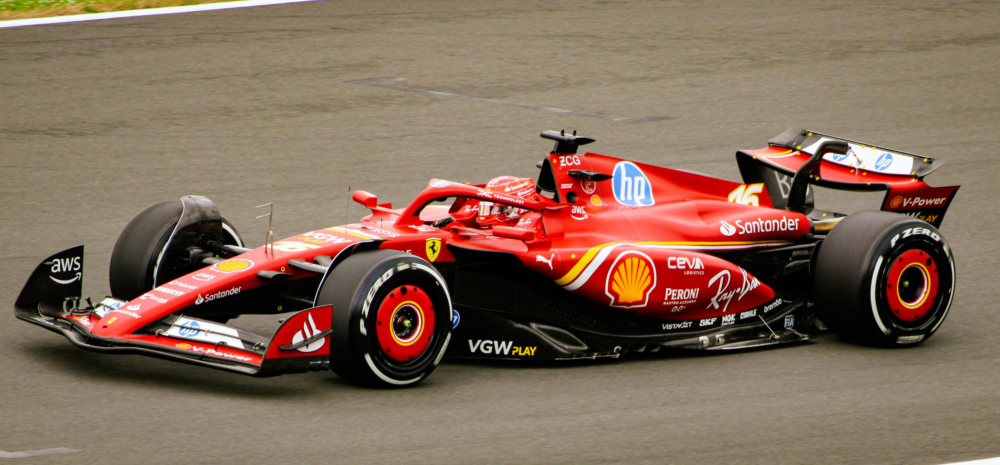

Drama en la pista
Incidentes, rivalidades y secretos del Paddock
Incidentes en la Pista
En la Fórmula 1, los incidentes en la pista son parte del espectáculo. Colisiones, accidentes o maniobras arriesgadas pueden cambiar el curso de una carrera en un abrir y cerrar de ojos. Sin embargo, la F1 también cuenta con reglas muy estrictas sobre cómo deben manejarse estos incidentes y las penalizaciones que pueden aplicarse.
En el Gran Premio de Bélgica de 1998, una intensa lluvia provocó múltiples choques y deslizamientos, involucrando a pilotos como Michael Schumacher y David Coulthard, y desatando el caos en la pista.
Penalizaciones comunes
Las penalizaciones en la Fórmula 1 son severas y pueden incluir desde una sanción de tiempo hasta la pérdida de posiciones en la parrilla de salida. Las más comunes se aplican por maniobras peligrosas, el uso ilegal de partes del coche o accidentes que involucren a otros pilotos.
Ferrari suma descalificaciones en China y una penalización a Leclerc en Abu Dhabi en 2025.
Rivalidades en la pista
Las rivalidades entre pilotos son el alma de la Fórmula 1. Las luchas en pista, las disputas por el campeonato y las diferencias de personalidad han marcado la historia de este deporte. En la F1, las rivalidades no solo representan una batalla por la victoria, sino también una cuestión de orgullo y estrategia.
En la actualidad, Max Verstappen y Charles Leclerc son dos de los pilotos más prometedores de la F1. A pesar de competir para equipos diferentes, ambos se han enfrentado en intensas batallas por el campeonato y han protagonizado algunas de las luchas más emocionantes de las temporadas recientes.
F1 off Track : Lo que no ves en pista
Aunque la Fórmula 1 es famosa por sus batallas en pista, los pilotos tienen una vida fuera del circuito que también atrae la atención de los medios. Desde las parejas de los pilotos (WAGs) hasta sus actividades en eventos sociales, la F1 tiene una esfera fuera de la pista llena de historias fascinantes.
WAGs
Las esposas y novias de los pilotos (WAGs) tienen una gran presencia en la Fórmula 1. Entre las más destacadas actualmente están Alexandra Saint Mleux (pareja de Charles Leclerc) y Rebecca Donaldson (pareja de Carlos Sainz).
Amistades entre pilotos
A pesar de la feroz competencia, muchos pilotos de F1 mantienen amistades fuera del circuito. Un ejemplo emblemático es la relación entre Carlos Sainz y Lando Norris.
"La F1 es muy intensa, pero fuera de la pista, disfruto de mis amigos y de poder desconectar" -- Daniel Ricciardo
